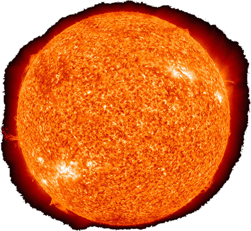
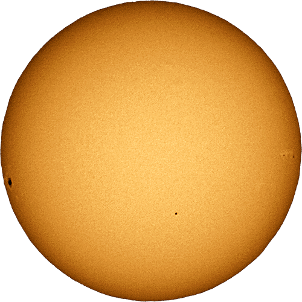
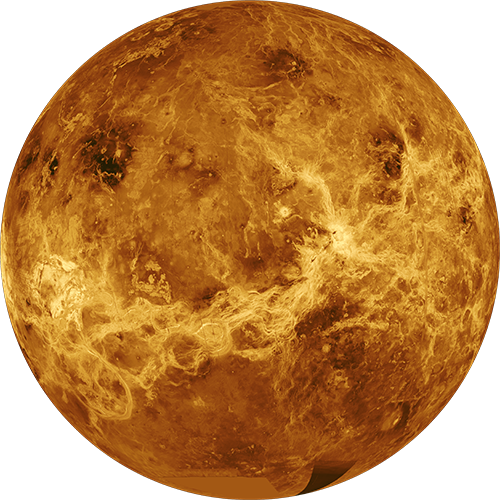
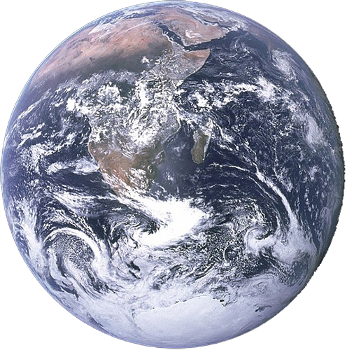
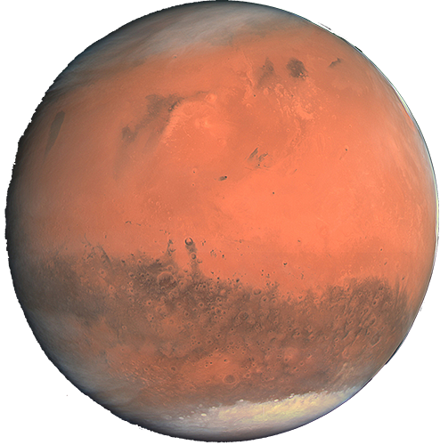
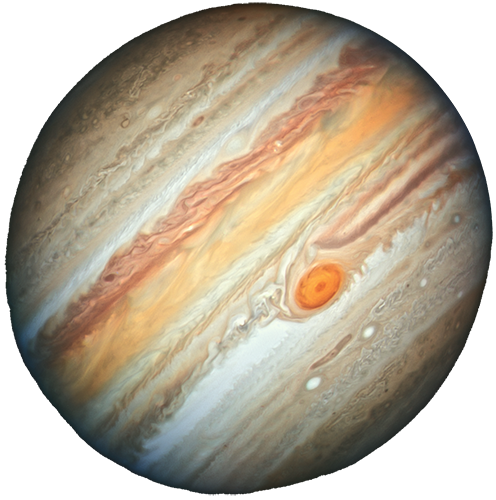
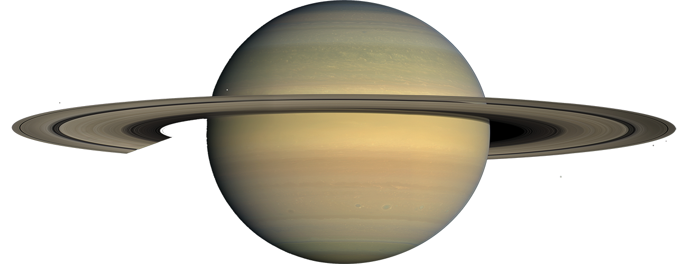
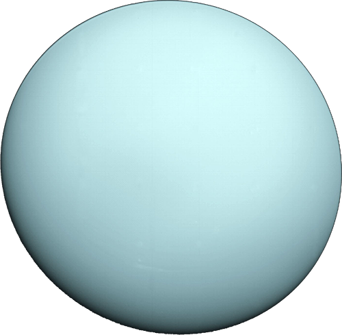
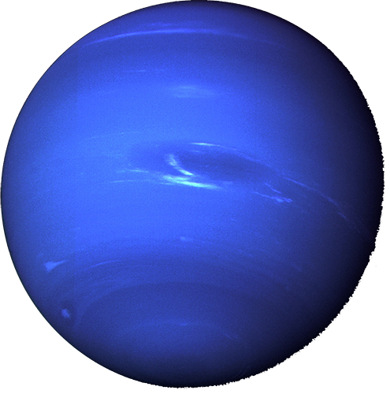
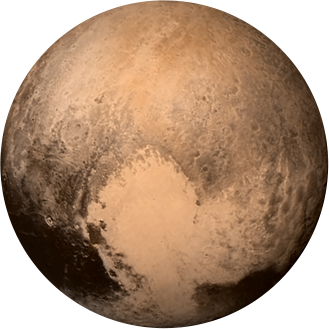

The sun is the huge ball of hydrogen that silently burns at the center of the solar system, giving us the privilege of carbon-based life. All of the planets in the solar system orbit around the sun, and it weighs several hundred thousand times earth. The sun is a star, and once it burns through its supply of hydrogen in a few billion years, it will become a red dwarf. After that, it will collapse to a white dwarf the size of the earth.
- 1.39Mkm in diameter
- 333000x the mass of earth
- No orbital period
- 28Gs of gravity
- 5490°C surface temperature

Mercury is the first planet from the sun, and it is the smallest planet in the solar system. Only two spacecraft have ever visited mercury: Mariner 10 in 1974 and Messenger in 2013. It is also one of the first extraterrestrial planets discovered, mentioned around 3000BC by the Sumerians.
- 4879km in diameter
- 0.06x the mass of earth
- 88 day orbital period
- 0.4Gs of gravity
- 430°C surface temperature

Venus is the second planet from the sun, referred to as a sister planet to earth, due to their similar size and weight. Venus’ atmosphere is 96% carbon dioxide, resulting in a very high surface temperature. (this sets a bad precedent for climate change on earth…) Venus’ orbital period lasts 224 days, but a rotation about it’s axis (a day) takes 243 days, making a day longer than a whole year!
- 12107km in diameter
- 0.81x the mass of earth
- 224 day orbital period
- 0.9Gs of gravity
- 470°C surface temperature

Earth is the third planet from the sun, and where you live! Earth is the only planet in the solar system capable of sustaining life, and its rotation is gradually slowing, due to tidal braking. Earth and its only natural satellite, The Moon, have long been the subject of fascination from scientists and philosophers the world over. In fact, on July 20, 1969, the first manned moon mission, Apollo 11, climaxed in Neil Armstrong’s famous words: “That’s one small step for man… one giant leap for mankind.”
- 12742km in diameter
- 1x the mass of earth
- 365.25 day orbital period
- 1G of gravity
- 15°C surface temperature

Mars is the fourth planet from the sun, and the second smallest planet behind mercury, the red planet has been the subject of more recent pondering over extraterrestrial migration and the future of the human race. Despite the fact that mars is 10% of the mass of earth, it has a similar amount of landmass. Many missions to mars have been unsuccessful, around 50% of the 39 missions. Mars is the second most hospitable planet, after earth, which is why many scientists and philanthropists are planning mars missions.
- 6779km in diameter
- 0.1x the mass of earth
- 687 day orbital period
- 0.37Gs of gravity
- -63°C surface temperature

Jupiter is the 5th planet from the sun, and one of the many gaseous planets in the solar system, along with Saturn, Neptune, and Uranus. Despite being 99% gas, it is suspected that Jupiter has a solid core made of rock. Because Jupiter is a gas giant, it does not have a well-defined surface. Having nearly 320x the mass of earth, it spins incredibly quickly, at around 45000kmh. This spinning has resulted in Jupiter accumulating rings, along with Saturn, but they are barely visible. Jupiter has been visited by 7 spacecraft, and has around 67 natural moons. Jupiter is so massive and bright, you can see it with your own eyes at night, you just need to know where to look.
- 142984km in diameter
- 317x the mass of earth
- 4332 day orbital period
- 2.5Gs of gravity
- -145°C surface temperature

Saturn is the sixth planet from the sun, and the planet most associated with rings. Saturn is a gas giant 95x as massive as the earth, and it interestingly emits more energy than it receives from the sun, due to an interesting reaction with the helium in the planet's atmosphere. Saturn has the highest winds on any planet in the solar system, measured to be around 2000km/h. Saturn’s composition includes mostly hydrogen and helium, with a suspected solid core of iron.
- 116460km in diameter
- 95x the mass of earth
- 10759 day orbital period
- 1G of gravity
- -185°C surface temperature

Uranus is the seventh planet from the sun. Discovered in 1781, it is the coldest planet having an average surface temperature of around -200°C. Uranus is yet another planet with rings, having 2 sets of barely-visible rings. These rings were probably formed a long time ago when one of Uranus’ moons was destroyed in an impact. Uranus has only ever been observed closely by one spacecraft, Voyager 2, in 1986.
- 50724km in diameter
- 14.5x the mass of earth
- 30688 day orbital period
- 0.88Gs of gravity
- -200°C surface temperature

Neptune is the eighth planet from the sun, and another gas giant that is suspected to have a solid core. Surprisingly, Neptune is the smallest gas giant. Neptune is the most distant true planet from the sun, and is yet another planet with little-known rings. Neptune has 14 moons, with the most interesting one being Triton, a frozen planet that spews nitrogen from below its surface.
- 49244km in diameter
- 17x the mass of earth
- 60145 day orbital period
- 1.14Gs of gravity
- -200°C surface temperature

Pluto is the ninth planet from the sun, but due to a recent debate between NASA and the ESA, it is now classed as a dwarf planet. It is incredibly small, just 2370km in diameter, it is smaller than the moon. Interestingly, Pluto is ⅓ frozen water, which may have made it sustainable to life at one point. Pluto has only been visited by one spacecraft, New Horizons, in 2015. Pluto takes over 200 years to orbit the sun once. Oddly, Pluto has an atmosphere, sometimes. When the planet is closer to the sun on its orbit path, the water on the surface melts and forms a thin atmosphere of nitrogen. When further away from the sun, this atmosphere then melts and falls back to the surface.
- 2376km in diameter
- 0.002x the mass of earth
- 90560 day orbital period
- 0.06Gs of gravity
- -240°C surface temperature